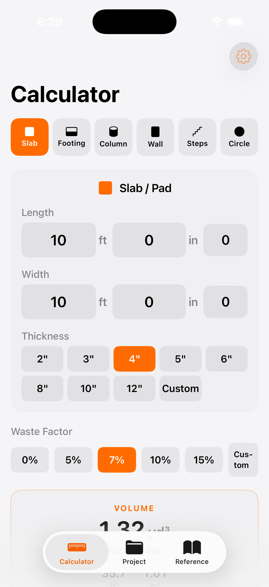
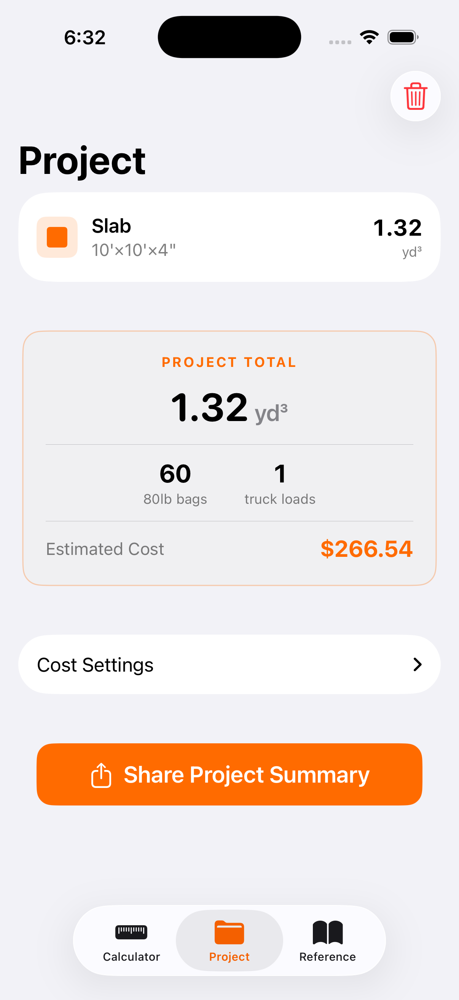
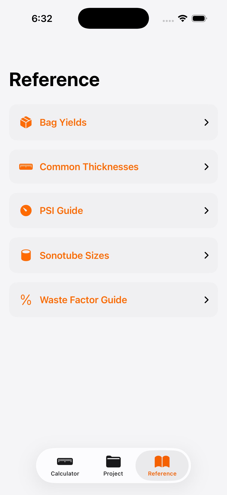
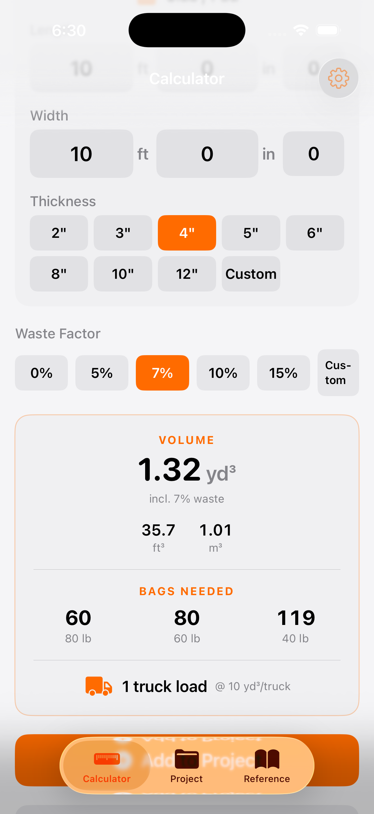
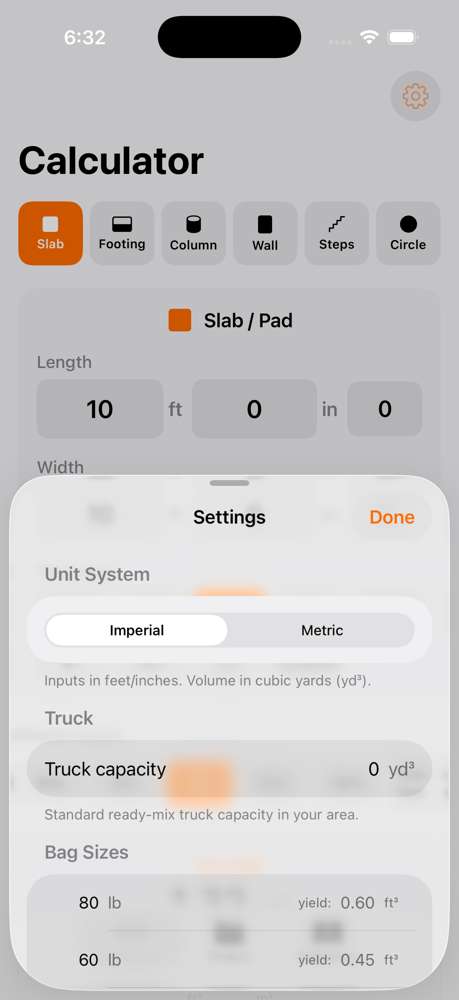

ConcreteCalc — Help & Support
Contents
Getting Started
ConcreteCalc is a fast, reliable concrete volume calculator built for tradespeople, contractors, and DIYers. It works completely offline — no account needed, no internet required.
The app has three tabs:
- Calculator — Enter dimensions and get instant volume, bag counts, and truck loads.
- Project — Save multiple calculations, see combined totals, and estimate costs.
- Reference — Quick-reference tables for bag yields, common thicknesses, concrete strength, sonotube sizes, and more.



Using the Calculator
- Choose a shape from the row of icons at the top: Slab, Footing, Column, Wall, Steps, or Circle.
- Enter your dimensions. In imperial mode you enter feet, inches, and fractions. In metric mode you enter metres and centimetres.
- Pick a thickness (or depth/diameter depending on the shape) from the quick-select buttons, or tap Custom to enter your own.
- Set a waste factor using the buttons below the dimensions. The default is 7% — a good general-purpose value.
- View your results at the bottom of the screen: total volume, number of bags needed for each bag size, and truck loads required.
- Add to Project — tap the button below the results to save this calculation to your project for combined totals.

Supported Shapes
ConcreteCalc handles the six most common concrete pour shapes:
- Slab / Pad — Flat rectangular pours like patios, sidewalks, garage floors, and driveways. Enter length, width, and thickness.
- Footing — Continuous strip footings for foundations and walls. Enter length, width, and depth.
- Column (Sonotube) — Round columns and piers. Enter diameter, height, and number of columns. Great for deck footings.
- Wall — Poured concrete walls. Enter length, height, and wall thickness.
- Steps / Stairs — Concrete steps with a landing platform. Enter width, number of steps, rise, run, and platform depth.
- Circle — Circular slabs like fire pit pads and round patios. Enter diameter and thickness.
Waste Factor
The waste factor adds extra volume to your order to account for spillage, uneven subgrade, over-excavation, and form irregularities. Running short on a pour is expensive — always round up.
- 0% — Exact volume only (not recommended for ordering).
- 5% — Simple flat slabs with good, tight formwork.
- 7% — Standard recommendation for most jobs.
- 10% — Footings poured against earth, complex shapes, or uneven ground.
- 15% — Pumped concrete, irregular pours, or when conditions are unpredictable.
- Custom — Enter any percentage you need.
Settings & Customisation
Tap the gear icon in the top-right corner of the Calculator tab to open Settings.

Unit System
Switch between Imperial (feet, inches, cubic yards) and Metric (metres, centimetres, cubic metres). The app defaults to whatever measurement system is standard in your country.
Truck Capacity
Set the capacity of a standard ready-mix truck in your area. This is used to calculate how many truck loads you need. Common values:
- 10 yd³ — Standard truck in the US and Canada.
- 7.6 m³ — Standard truck in Australia, UK, and most metric countries.
Bag Sizes
Customise which bag sizes are available and their yields. The defaults are set based on your country — imperial countries get 40/60/80 lb bags, metric countries get 20/25/30/40 kg bags.
Reset to Defaults
Scroll to the bottom of Settings and tap Reset to Defaults to restore all settings to their original values for your region.
Setting Up Cost Estimates
ConcreteCalc can estimate the cost of your concrete order. Here is how to set it up:
- Go to the Project tab by tapping the second icon in the bottom tab bar.
- You need at least one calculation saved. If the Project tab is empty, go back to the Calculator, run a calculation, and tap Add to Project.
- In the Project tab, tap Cost Settings to expand the pricing section.
- Enter the price per cubic yard (or per cubic metre in metric mode). This is the rate your local ready-mix supplier charges. Call them for a quote — prices vary by region, mix strength, and time of year.
- Optionally enter a delivery fee. Many suppliers charge a flat delivery fee per truck.
- Your Estimated Cost appears immediately in the Project Total card above.
Project Tab & Totals
The Project tab lets you combine multiple calculations into a single job estimate:
- Add calculations from the Calculator tab by tapping Add to Project below the results.
- See combined totals — total volume, total truck loads, and estimated cost for the entire project.
- Remove individual items by swiping left on a row.
- Share a summary — tap Share Project Summary to generate a plain-text summary you can send to a supplier, client, or colleague via text, email, or any app.
- Clear the project by tapping the trash icon in the top-right corner.
Your project is saved automatically and persists between app launches.
Reference Guide
The Reference tab gives you quick-access tables for common concrete data, so you do not have to look it up elsewhere:
- Bag Yields — How much concrete each bag size produces.
- Common Thicknesses — Recommended slab thickness for sidewalks, driveways, garages, and commercial work.
- PSI / MPa Strength Guide — Which concrete strength to order for your application.
- Sonotube Sizes — Which tube diameter to use for deck posts, footings, and structural piers.
- Waste Factor Guide — Recommended waste percentages for different job types.
- Ready-Mix Trucks — Common truck capacities and when to order ready-mix vs. use bags.
All reference data switches between imperial and metric to match your unit system setting.
Formulas & How Calculations Work
ConcreteCalc uses standard geometry formulas trusted across the construction industry. Here is exactly how every calculation works, so you can verify the numbers yourself.
Slab / Pad
A simple rectangular volume.
Imperial inputs are converted so all measurements are in feet before multiplying. Thickness in inches is divided by 12 to convert to feet. The result in cubic feet is divided by 27 to get cubic yards.
Volume = 10 × 10 × (4 ÷ 12) = 33.33 ft³ = 1.23 yd³
Footing
Identical to a slab — a rectangular solid defined by length, width, and depth.
Volume = 40 × 1.5 × 1 = 60 ft³ = 2.22 yd³
Column (Sonotube)
A cylinder. The diameter input is converted to a radius in feet.
When using imperial, the diameter in inches is divided by 24 to get the radius in feet (i.e. divided by 2 for radius, then by 12 to convert inches to feet).
Volume = π × (12 ÷ 24)² × 4 × 4 = π × 0.25 × 4 × 4 = 12.57 ft³ = 0.47 yd³
Wall
A flat rectangular volume defined by length, height, and wall thickness.
Volume = 20 × 4 × (8 ÷ 12) = 53.33 ft³ = 1.98 yd³
Steps / Stairs
Steps are calculated as a series of stacked rectangles plus a platform slab. Each step is one rise taller than the one above it.
Platform Volume = Width × Platform Depth × (N × Rise)
Total = Steps Volume + Platform Volume
The formula N × (N+1) ÷ 2 is the triangular number series — it accounts for the fact that each lower step is one rise taller than the one above, forming a staircase shape.
Steps = 4 × (11/12) × (7/12) × 3 × 4 ÷ 2 = 12.83 ft³
Platform = 4 × 3 × (3 × 7/12) = 21.00 ft³
Total = 33.83 ft³ = 1.25 yd³
Circle (Round Slab)
A flat cylinder — like a slab but round.
Volume = π × 5² × (4 ÷ 12) = 26.18 ft³ = 0.97 yd³
Waste Factor
The waste factor is applied as a percentage increase on the base volume.
Adjusted = 1.23 × 1.07 = 1.32 yd³
Bags Needed
The number of bags is calculated by dividing the waste-adjusted volume by the yield per bag, then rounding up.
Standard yields (imperial): 80 lb = 0.60 ft³, 60 lb = 0.45 ft³, 40 lb = 0.30 ft³.
Standard yields (metric): 40 kg = 0.020 m³, 30 kg = 0.015 m³, 25 kg = 0.013 m³, 20 kg = 0.010 m³.
Bags = ⌈ 35.67 ÷ 0.60 ⌉ = ⌈ 59.44 ⌉ = 60 bags
Truck Loads
The number of ready-mix truck loads is calculated by dividing total volume by truck capacity, rounded up.
Default truck capacities: 10 yd³ (imperial) or 7.6 m³ (metric). You can change this in Settings.
Unit Conversions
1 cubic foot = 0.0283168 cubic metres
1 cubic metre = 1.30795 cubic yards
All calculations are performed in cubic feet internally, then converted to cubic yards or cubic metres for display.
Frequently Asked Questions
How accurate are the calculations?
The formulas use standard geometry — the same maths your ready-mix supplier uses. The accuracy depends on how precisely you measure your site. Always use the waste factor to account for real-world conditions like uneven ground and formwork imperfections.
Should I use bags or order ready-mix?
As a general rule, bags are practical for jobs under 1 cubic yard (0.75 m³). Anything larger and ready-mix is faster, cheaper per unit, and produces a more consistent result. Check the Reference tab for more guidance.
What waste factor should I use?
7% is the standard recommendation for most jobs. Use 5% for simple flat slabs with tight formwork, 10% for footings poured against earth or complex shapes, and 15% for pumped concrete or irregular pours. When in doubt, go higher — a short pour is far more costly than a small over-order.
Can I change between metric and imperial?
Yes. Tap the gear icon on the Calculator tab to open Settings, then switch the Unit System toggle. The app defaults to the measurement system used in your country, but you can change it at any time.
Is my data saved?
Yes. Your project, cost settings, and preferences are saved automatically on your device. They persist between app launches. If you have iCloud backups enabled, your data is included in those backups. We never send your data to any server.
Does the app work offline?
Yes, 100%. ConcreteCalc works entirely offline with no internet connection required. Use it on-site, in a basement, or anywhere you have your phone.
How do I share my project estimate?
In the Project tab, tap Share Project Summary. This generates a plain-text breakdown of all your calculations, totals, and cost estimate that you can send via text, email, AirDrop, or any other sharing method.
The app is crashing or not working correctly
Make sure you are running the latest version of the app and iOS. Try closing and reopening the app. If the problem persists, contact us at the email below with a description of the issue and your device model.
Contact Support
Cannot find the answer you need? We are happy to help. Email us at support@top7systems.net and we will typically respond within 48 hours.
When reporting a bug, please include:
- Your device model (e.g. iPhone 15 Pro)
- Your iOS version (found in Settings > General > About)
- A description of what happened and what you expected